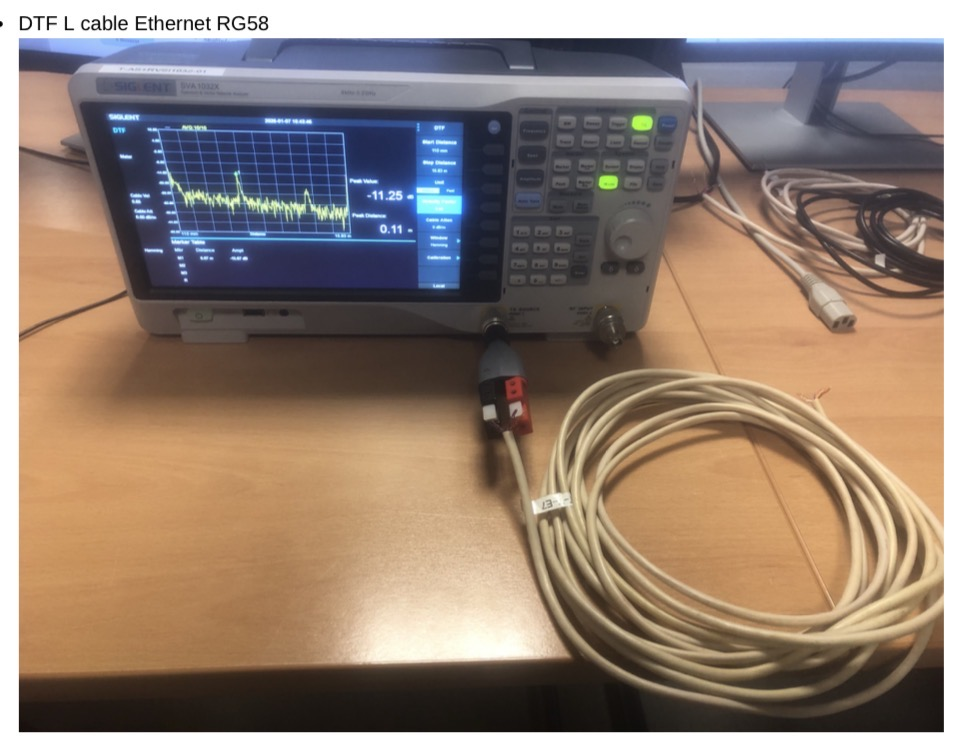
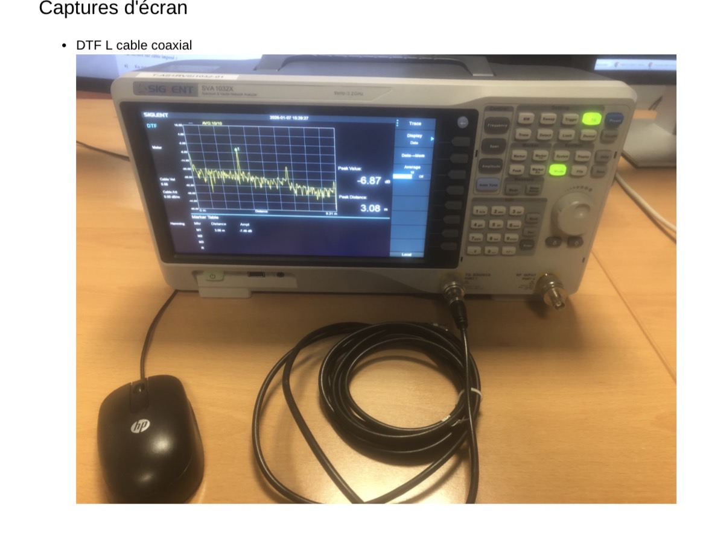
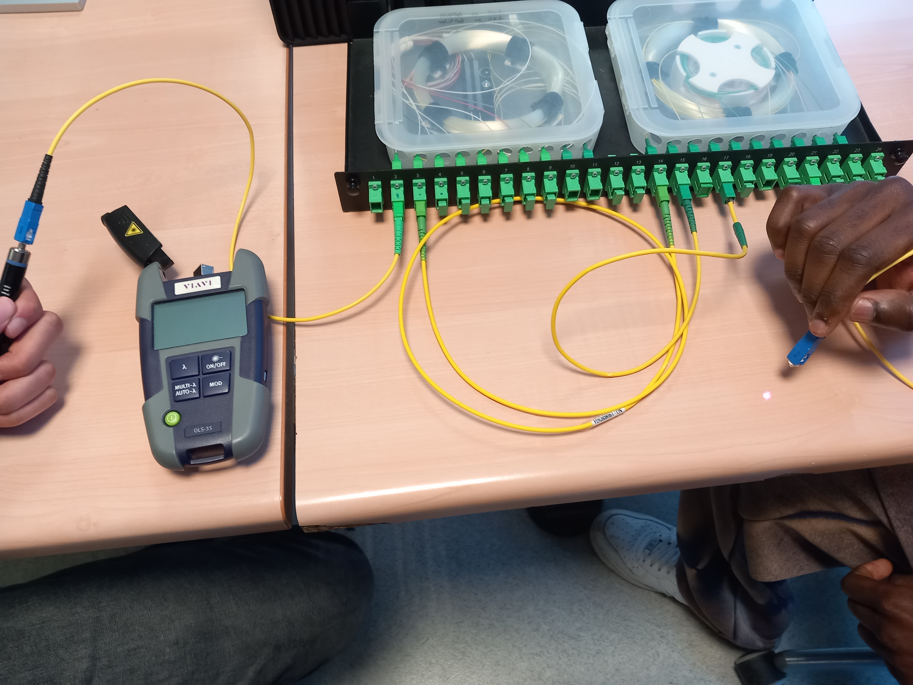

SAÉ 13 — Découverte des dispositifs de transmission
Contexte & Objectifs
Durée : 2 semaines | Travail en binôme : Travaux pratiques en laboratoire
J'ai participé à une série de mesures et d'analyses sur des supports de transmission (coaxial et fibre optique) pour étudier leur fonctionnement et évaluer leurs performances. Cet apprentissage pratique simule les interventions réelles que doit réaliser un technicien réseau lors du déploiement d'une infrastructure. L'enjeu était de maîtriser les outils de mesure (réflectomètre, photomètre) et de comprendre les caractéristiques techniques des supports.
Activités Conduites
- Étalonnage des instruments : Calibrage du photomètre pour les mesures sur fibre optique selon les procédures normalisées
- Mesures de signaux : Réalisation de tests sur câble coaxial et fibre optique en conditions contrôlées
- Analyse de réflectométrie : Utilisation de la réflectométrie (DTF) pour détecter les défauts et atténuations sur les câbles
- Analyse des résultats : Interprétation des données pour évaluer la qualité de transmission
- Rapport de mesure : Documentation des résultats avec interprétation technique
Compétences Mobilisées
- Mesure et analyse de signaux électriques
- Caractérisation de systèmes de transmission
- Utilisation d'outils de diagnostic (réflectomètre, photomètre)
- Déploiement et validation de supports de transmission
- Communication technique avec les collaborateurs
Tâches Réalisées
- Nous avons calibré le photomètre pour effectuer les mesures sur fibre optique
- Nous avons réalisé des mesures de signaux sur câble coaxial et fibre optique.
- Nous avons analysé les résultats pour vérifier les performances des supports de transmission.
- Nous avons réalisé l’analyse de la transmission.
- Étude des performances réseau
Preuves

Cette image présente une vérification d’un câble Ethernet à l’aide d’un testeur de câble (ou multimètre / testeur de signal). Elle permet de contrôler la continuité des paires et de vérifier le bon fonctionnement du câble réseau.

Cette image montre une mesure de réflectométrie DTF réalisée sur un câble coaxial à l’aide d’un réflectomètre. Cette mesure permet de détecter les défauts et les pertes sur le câble afin d’évaluer la qualité de la transmission du signal.

Acquis de Compétences (AC)
- AC12.01 – Mesurer et analyser les signaux
- AC12.02 – Caractériser des systèmes de transmissions élémentaires
- AC12.03 – Déployer des supports de transmission
- AC12.05 – Communiquer avec un tiers et adapter son discours
Autoévaluation
Points forts : J'ai démontré une rigueur méthodologique exemplaire lors des mesures et une excellente capacité à utiliser des instruments complexes. Ma collaboration avec mon binôme a été fluide et productive, facilitant une compréhension mutuelle des phénomènes observés.
Apprentissages clés : Cette SAÉ m'a permis de comprendre les caractéristiques techniques des supports de transmission et leur impact direct sur les infrastructures réseau. J'ai développé une sensibilité à la qualité de transmission et à l'importance des mesures préventives.
Difficultés rencontrées : La manipulation du réflectomètre a demandé une période d'adaptation. L'interprétation des courbes DTF était complexe au départ, mais les explications détaillées du tuteur et mon implication ont levé ces incertitudes.
Améliorations possibles : J'aurais pu approfondir davantage l'analyse théorique des signaux en explorant les impédances et les pertes diélectriques. Une simulation numérique aurait enrichi ma compréhension des phénomènes mesurés.
Compétence renforcée : AC12.01 – Mesurer et analyser les signaux.